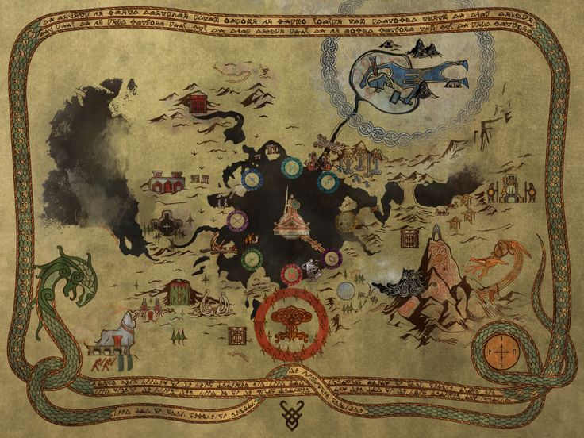

Carte Interactive de la Saga
Explorez les univers de God of War à travers les âges

God of War (2005)
God of War II (2007)
God of War III (2010)
God of War: Ascension (2013)

God of War (2018)
God of War Ragnarök (2022)